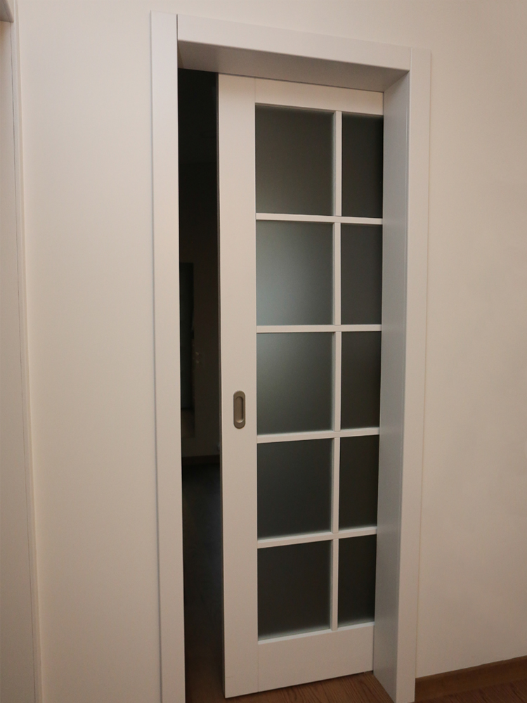

durys
About me

Past Articles
- Vidaus Durys - Vilniuje, Kaune, Klaipėdoje | Kambariodurys.lt
Medinės durys pardavinėjamos tiek natūralios, tiek jau dažytos (beicuotos) įvairiomis spalvomis. Faneruotos durys – karkasas gaminamas iš klijuotos medienos, abi pusės dengiamos medžio drožlių plokščių sluoksniais, o paviršius padengtas natūralia ar „fine line“ faneruote. Laminuotos durys puikiai dera prie šiuolaikinio ... - Medinės vidaus durys iš ąžuolo masyvo » Medžio stilius
Kokybiškos vidaus durys už gerą kainą. Didelis pasirinkimas, akcijos ir nuolaidos. - Durys internetu
Medinės vidaus durys – svarbus interjero akcentas, įsiliejantis į bendrą patalpos erdvę. Pakeitus duris galima greitai ir ženkliai pakeisti kambario vaizdą. Svarbu, kad durys įsilietų ir papildytų interjerą, būtų tiksliai parinktu Jūsų namų dekoro elementu.Savo klientams siūlome pagal jų individualius projektus pagamintas ... - Durys > Plastikinės durys | Vokiška Kokybė | KOMMERLING, KBE
Kambario durys turi būti ne tik tvirtos, bet ir gražios, puošnios. Tam jos yra dengiamos ekofaneruote. Toks durų padengimo būdas yra pakankamai stiprus ir tampa itin tikroviška medžio imitacija. - Durys | Hörmann durų programa stabilioms statyboms
Šarvuotos durys, vidaus durys, lauko durys, metalinės laiptinių durys, plastikinės lauko durys. Gamyba ir prekyba. Šiauliai - VIP Durys | Vidaus durys, pardavimas, pristatymas, montavimas
Medinės lauko durys - specialiai apšiltintos ir impregnuotos, Lietuviškai žiemai ir vasarai pritaikytos medienos masyvo durys. Apsauga. Labai svarbu, kad projektuojant namą medinės lauko durys būtų apsaugomos nuo tiesioginių saulės spindulių ir nuo tiesioginio lietaus. - Pagrindinis - Faneruotos vidaus durys kaune - Pigios geros ...
Vidaus durys montuojamos, kai patalpose sudėtos grindys. Vidaus duris rekomenduojame montuoti po pirmojo sienų dažymo. Kada montuojamos stumdomos durys, suvažiuojančios į sieną? Stumdomas duris, suvažiuojančias į sieną, patogiausia įsirengti statant naują būstą ar darant remontą. ... - Vituko durys – Jūsų prestižui
VIP durys – kokybiškų vidaus durų pardavimas ir montavimas. Esame Baltarusijos durų gamintojo atstovai Lietuvoje. Gamintojas specializuojasi kurdamas duris, tinkančias moderniame ir klasikiniame interjere. Dėmesingai sekdami naujų stilių ir modernaus dizaino kaitą, kiekvienais metais pristatome naujus aktualius durų modelius ... - VIDAUS durys | DURŲ PASAULIS
Ilgaamžiškumas Durys gaminamos tik iš aukščiausios kokybės brandaus ąžuolo medienos, yra ilgaamžės, tvirtos, puikiai izoliuoja garsą. Aukščiausia kokybė Kontroliuojame ir esame atsakingi už visą tiekimo grandinę: nuo medienos atrankos, pristatymo į gamyklą, tikslaus technologinio medžio paruošimo ciklo, produkto gamybos iki ... - Laminuotos durys - Katalogas - DurysDurytes
E-durys – tai elektroninė durų parduotuvė, prekiaujanti vidaus, lauko, specializuotos paskirties durimis bei durų priedais. Čia rasite duris pasižyminčias ne tik savitu stiliumi ar unikaliu dizainu, bet ir išskirtiniu funkcionalumu: nematomas vidaus duris, stumdomas duris, abipuses varstomas duris, priešgaisrines ar garsą ...
Menu
- Vidaus Durys - Vilniuje, Kaune, Klaipėdoje | Kambariodurys.lt
- Medinės vidaus durys iš ąžuolo masyvo » Medžio stilius
- Durys internetu
- Durys > Plastikinės durys | Vokiška Kokybė | KOMMERLING, KBE
- Durys | Hörmann durų programa stabilioms statyboms
- VIP Durys | Vidaus durys, pardavimas, pristatymas, montavimas
- Pagrindinis - Faneruotos vidaus durys kaune - Pigios geros ...
- Vituko durys – Jūsų prestižui
- VIDAUS durys | DURŲ PASAULIS
- Laminuotos durys - Katalogas - DurysDurytes
Aukščiausios kokybės Medinės durys, Ąžuolinės durys, Pušinės durys, Faneruotos durys, Lauko durys, Parketas. Pagaminta Lietuvoje

Pradžia Produktai Vidaus durys Lauko durys Grindinės lentos Paslaugos Apie mus Naujienos Kontaktai Prisijungti / Registruotis Pirkinių krepšelis
uždaryti Dubysos g. 19, Klaipėda +370 68414419; +370 654 34605 Pradžia Produktai Vidaus durys Lauko durys Grindinės lentos Paslaugos Apie mus Naujienos Kontaktai uždaryti Cart ( o ) 0 / € 0.00 PASLAUGOS Aukščiausios kokybės Medinės durys, Ąžuolinės durys, Pušinės durys, Faneruotos durys, Lauko durys, Parketas. Pagaminta LietuvojeAukščiausios kokybės medinės durys
Durų montavimas
Žiūrėti plačiau
Durų remontas
Žiūrėti plačiau
Durų meistrai
Žiūrėti plačiau
Rekomenduojamos durys Produktai, atitinkantys aukščiausius standartus Pridėti į norų sąrašą Sėkmingai įdėtas Naršyti norų sąrašą Jau įdėtas Naršyti norų sąrašą Greita peržiura Uždaryti Į krepšelį
Dažytos durys Trend1
€ 225.00 Pridėti į norų sąrašą Sėkmingai įdėtas Naršyti norų sąrašą Jau įdėtas Naršyti norų sąrašą Greita peržiura Uždaryti Į krepšelįKlasikinės diverės durys su stiklu Finland
€ 550.00 Pridėti į norų sąrašą Sėkmingai įdėtas Naršyti norų sąrašą Jau įdėtas Naršyti norų sąrašą Greita peržiura Uždaryti Į krepšelįĄžuolinės durys Trend1
€ 335.00 Pridėti į norų sąrašą Sėkmingai įdėtas Naršyti norų sąrašą Jau įdėtas Naršyti norų sąrašą Greita peržiura Uždaryti Į krepšelįĄžuolinės dviverės durys su stiklu Norge
€ 870.00 Pridėti į norų sąrašą Sėkmingai įdėtas Naršyti norų sąrašą Jau įdėtas Naršyti norų sąrašą Greita peržiura Uždaryti Į krepšelįDažytos durys su stiklu ir nevarstoma dalimi Trend4
€ 510.00 Pridėti į norų sąrašą Sėkmingai įdėtas Naršyti norų sąrašą Jau įdėtas Naršyti norų sąrašą Greita peržiura Uždaryti Į krepšelįĄžuolinės durys su stiklu Trend3
€ 415.00 Pridėti į norų sąrašą Sėkmingai įdėtas Naršyti norų sąrašą Jau įdėtas Naršyti norų sąrašą Greita peržiura Uždaryti Į krepšelįKlasikinės dviverės dažytos durys su stiklu Island
€ 550.00 Pridėti į norų sąrašą Sėkmingai įdėtas Naršyti norų sąrašą Jau įdėtas Naršyti norų sąrašą Greita peržiura Uždaryti Į krepšelįDažytos durys Trend3 RNG3
€ 280.00 Pridėti į norų sąrašą Sėkmingai įdėtas Naršyti norų sąrašą Jau įdėtas Naršyti norų sąrašą Greita peržiura Uždaryti Į krepšelįPušinės durys Dannebrog
€ 160.00 Pridėti į norų sąrašą Sėkmingai įdėtas Naršyti norų sąrašą Jau įdėtas Naršyti norų sąrašą Greita peržiura Uždaryti Į krepšelįPušinės dviverės durys su stiklu Norge
€ 390.00 Pridėti į norų sąrašą Sėkmingai įdėtas Naršyti norų sąrašą Jau įdėtas Naršyti norų sąrašą Greita peržiura Uždaryti Į krepšelįKlasikinės dažytos durys Finland3
€ 225.00 Pridėti į norų sąrašą Sėkmingai įdėtas Naršyti norų sąrašą Jau įdėtas Naršyti norų sąrašą Greita peržiura Uždaryti Į krepšelįKlasikinės dažytos durys Finland2
€ 225.00Susisiekite
Reikia patarimo? Kreipkitės į mus! „Mdurys“ komandos darbas – padėti jums priimti tinkamiausią sprendimą. NAUJIENOS 29 Bal NaujienosPristatome unikalios kokybės STAKI OAK FLOOR ąžuolines grindis
Rašyti atsiliepimą STAKI - medinių grindų gamintojas, kuris jau 20 metų džiugina savo klientus plačiu ąžuolinių grindų asortimentu, aukšta gaminių kokybe ir maloniu klientų aptarnavimu. Nuo šiol...Skaityti daugiau
30 Kov NaujienosLauko durys. Kaip išsirinkti?
Rašyti atsiliepimą Lauko durys. Kaip išsirinkti? Jeigu statotės sau namą, apie lauko duris reikėtų galvoti kiek įmanoma anksčiau, geriausiu atveju – dar sudarant namo projektą. Pagalvokite,...Skaityti daugiau
14 Kov NaujienosMedinės durys ir kaip jas tinkamai prižiūrėti?
Rašyti atsiliepimą Medinės durys ir kaip jas tinkamai prižiūrėti? Šito klausia ne vienas klientas. Durys, kaip ir baldai, reikalauja tinkamos priežiūros. Norintiems išsaugoti išorinį durų vaizdą,...Skaityti daugiau
13 Kov NaujienosKaip išsirinkti tinkamas vidaus duris?
Rašyti atsiliepimą Vienas iš būtiniausių ir svarbiausių interjero akcentų yra vidaus durys. Ne vienas jas rinkdamasis kelia gana didelius reikalavimus. Nors jos ir neturi būti itin...Skaityti daugiau
Kontaktai
Tel. +370 68414419
Tel. +370 65434605
El. paštas durys@madaris.lt
Dalintis socialiniame tinkle
Facebook Twitter Google Email PinterestNaujienlaiškio prenumerata
© 2018 Mdurys.lt Visos teisės saugomos. Puslapio-kurimas.lt Scroll To TopŠi svetainė naudoja slapukus, kad pagerintų naudotojų patirtį. Naudodamiesi mūsų svetaine, Jūs sutinkate su visais slapukais pagal mūsų politiką. Skaityti daugiau .
SutinkuPosted by Jack  Read more
Read more  Comments (15)
Comments (15)  2020.10.27 11:13
2020.10.27 11:13